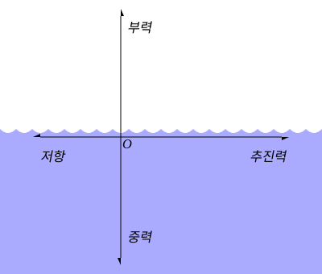
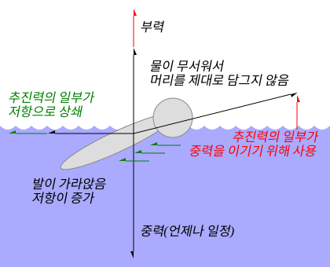
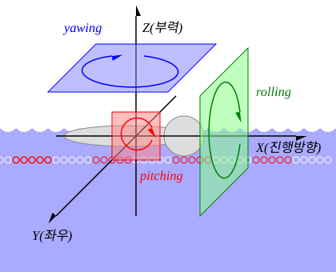

부력과 추진력, 흔들림
부력과 중력
"수영을 처음 배울 땐 물에 가라않을까봐 고민이었는데, 어느정도 배우면 물에 가라앉지 못해서 고민이다."

수영과 힘 "force.svg", iseohyun.com, CC-BY-SA- 부력: 내 몸이 물을 밀어낸 만큼, 위로 뜨는 힘.
- 몸을 물에 많이 담글수록, 몸은 물에 뜬다.
- 머리를 들면, 다리가 더 가라 않는다.
- 호흡을 많이 마시면, 배가 부풀어올라, 더 쉽게 물에 뜬다.
- 밀도와의 관계
- 물의 밀도 = 1 g/㎤
- 인체의 밀도 = 0.98 g/㎤
- 지방의 밀도 = 0.9 g/㎤(지방이 많으면 잘 뜬다.)
- 바닷물의 밀도 = 1.025 g/㎤ (사해: 1.24 g/㎤)
- 체성분 차이: 골밀도↑, 근육↑ = 부력↓ (백인 수영선수가 많은 이유)
- 몸을 물에 많이 담글수록, 몸은 물에 뜬다.
추진력과 저항
"수영을 오래한 나이 지긋하신 분들이 나보다 빨리 나가는 이유는 힘이 좋아서는 아닐 것이다."
"추진력을 10 늘리는 것보다, 저항을 30 줄이는 것이 쉽다."

잘못된 자세: 느림, 힘듦 "wrong-position.svg", iseohyun.com, CC-BY-SA- 추진력: 물을 뒤로 밀어낸 만큼(작용), 몸이 앞으로 나아가는 힘(반작용)
- 저항력(Drag Force, 항력, \( F_d \)):
-
\[ F_d = {1 \over 2} C_d \rho A v^2\]
\( C_d \): 항력계수(Drag Coefficient), 물체의 모양, 표면 상태, 흐름의 상태에 따라 결정
\( \rho \): 유체의 밀도(Density of Fluid)
\( A \): 물체의 단면적(Cross-sectional Area)
\( v \): 물체의 속력(Velocity)
결론: 근력을 올려서 추진력을 올리는 것은 많은 노력을 요구한다.
-
\[ F_d = {1 \over 2} C_d \rho A v^2\]
-
스트림라인(Streamline): 유선형 동작으로 물의 저항을 최소한으로 만드는 자세
- 팔/손: 팔을 완전히 뻗에 귀 옆으로 붙인다(완전히: 팔과 얼굴 사이에 공간이 없어야 한다.)
- 머리/목: 시선을 바닥, 턱을 살짝 당긴다.
- 몸통/척추: 몸통이 처지지 않도록 허리를 든다.
- 다리/발끝: 다리가 벌어지지 않고, 발끝을 편다.

수영복의 과학
수영복의 과학: 스포츠에 숨은 과학 이야기,
e-school.or.kr
전신 수영복은 상어의 피부를 모방하여, 물이 빠르게 흐르도록 디자인되었습니다. 또한 근육을 눌러, 피로를 연장시켜주고, 수소성 재질은 부력을 늘려줍니다. 2009년 로마 세계수영선수권대회에서 43개의 세계 신기록이 달성되자, 세계 수영연맹에서는 '기술 도핑'이라는 이유로 2010년부터 선수들의 수영복을 남자의 경우 허벅지 무릎까지, 여자의 경우 어깨부터 무릎까지로 제한하였습니다.
흔들림, 회전

3d-rotation "3d-rotation.svg", iseohyun.com, CC-BY-SAX축방향으로 진행할 때,
| 이름 | 고정축 | 예시 |
|---|---|---|
| 롤링(rolling) | X축 | 자유형 숨을 쉴 때, 자유형 발차기 할 때, 어깨나 골반이 회전함 |
| 피칭(Pitching) | Y축 | 접영, 돌핀킥, 평형할 때 머리와 몸의 진행방향이 상하로 회전함 |
| 요잉(Yawing) | Z축 | 스트림라인이 불안정하여 지그재그로 나아갈때, 옆 레인 방향으로 몸이 회전함 |
롤링이 중요한 이유
- 어깨와 팔의 가동범위가 상승(X: 어깨 통증)
- 항력 감소(몸의 단면적이 줄어듦)
- 호흡에 유리: 과도하게 고개를 돌리지 않아도 됨
- 스트록과 킥의 조화
용어
| 용어 | 영문 | 뜻 |
|---|---|---|
| 레인 | lane | 1. 레일로프(lane rope): 부표 2. 로프로 구분된 공간 1번 레인: 출발대를 기준으로 가장 오른쪽(국제수영연맹(FINA) 기준) |
| 수평 뜨기 | horizontal floating | 발목과 다리, 허리를 펴고, 팔을 머리위로 쭉 뻗어 스트림라인을 유지한 상태로 물 위에 고요하게 뜨는 자세 |
| 드릴 | drill | 어떤 영법에서 특정한 자세를 교정/습득하기 위한 목적으로, 고안된 자세로 집중적으로 연습하는 것 |
| 롤링 | rolling | 자유형, 배형에서 호흡, 관절 보호, 추진력 향상, 저항 감소의 목적으로 어깨와 골반을 회전시키는 것 |
| 물잡기 | catch | 물을 밀기 전에, 최대한 많은 물을 밀기 위해 취하는 사전 동작 |
| 리커버리 | recovery | 영법의 물밀기 동작을 완료하고, 다음 동작을 준비하는 동작 |
| 글라이딩 | gliding | 리커버리 이전에, 낮은 저항으로 추진력을 유지하여 적은 힘으로 물 위를 미끄러지듯이 나아가는 동작 |
| 수력 | 수영 경력(예: 수력 5년입니다/ 수력 1년 수린이입니다.) | |
| 혼영 | medley swimming, individual medley(IM) |
접배평자(접영-배형-평형-자유형)영법을 순서대로 구현하는 종목 |
| 횡영 | sidestroke | 옆으로 누워서, 한쪽 팔과 다리로 물을 밀어내는 영법 |
에티켓
- 청결
- 입장시 샤워를 합니다.
- 수영모를 정확히 착용합니다.
- 수영중 물을 마셨을 경우, 배수구에 벹습니다.
- 휴식 방법
- 레인의 중간에서 휴식을 취하지 않습니다.
- 레인의 중앙은 턴을 위해 비워둡니다.
- 지정된 휴식시간을 준수합니다(50분 수영, 10분 휴식.)
- 훈련
- 자신의 속도에 맞는 레인에서 훈련합니다(초급 레인은 초급자 속도에 맞춰서, 상급 레인은 상급자 속도에 맞춰서).
- 평형과 접영 등 넓은 영법을 사용시 마주오는 사람을 공격하지 않도록 합니다.
- 접촉사고 발생시 일단 먼저 사과합니다(교통사고가 아니므로 잘잘못을 따져서 얼굴 붉히지 않습니다.)
- 오리발은 강사의 지도하에 강의시간에 사용합니다.
- 뒷 사람에 의해 발 끝이 만져졌다면, 순서를 양보하는 것이 좋을 것 같습니다.
- 턴 하는 사람에게 출발 우선권을 줍니다.
- 기타
- 타인의 신체를 너무 관찰하거나, 오해를 사지 않도록 주의합니다.
- 타인의 수영복을 강제하거나, 텃세를 부려서는 안됩니다.
- 수영장이 요구하는 수영복 규격을 확인합니다(비키니가 안되는 수영장이 있을 수 있습니다.)
영법
"수영은 모든 영법을 마스터 하면, 그때부터 시작입니다."
현대 수영은 4가지로 구분합니다. 자유형, 배영, 평영, 접영입니다. 수영 입문자가 바로 영법을 배우는 것은 아닙니다. 수영에 입문하면, 지상훈련을 통해 수평뜨기 자세를 익히고, 물과 친숙해 지는 것부터 시작합니다.
본격적으로 4가지 영법을 순서대로 습득하는데 일반적으로 6개월에서 1년이 소요됩니다. 이후 턴과 스타트를 연습하고, 연수반을 통해 자세교정을 받습니다. 별도로 생존과 구조를 위한 영법도 존재합니다.
4개의 영법은, 수영을 배우는 과정의 일부분입니다.
| 영법 | 성별 | 50m | m/s | year | 100m | m/s | year | 200m | m/s | year |
|---|---|---|---|---|---|---|---|---|---|---|
| 자유형 freestyle |
남자 | 20.91 | 2.39 | 2009 | 45.56 | 2.19 | 2024 | 1:40.91 | 1.98 | 2009 |
| 여자 | 23.61 | 2.12 | 2023 | 51.71 | 1.93 | 2017 | 1:52.56 | 1.78 | 2024 | |
| 배영 backstroke |
남자 | 23.55 | 2.12 | 2023 | 51.60 | 1.94 | 2022 | 1:51.92 | 1.79 | 2009 |
| 여자 | 26.86 | 1.86 | 2023 | 57.13 | 1.75 | 2024 | 2:03.14 | 1.62 | 2023 | |
| 평영 breaststroke |
남자 | 25.95 | 1.93 | 2017 | 56.88 | 1.76 | 2019 | 2:05.48 | 1.59 | 2023 |
| 여자 | 29.16 | 1.71 | 2023 | 1:04.13 | 1.56 | 2017 | 2:17.55 | 1.45 | 2023 | |
| 접영 butterfly |
남자 | 22.27 | 2.25 | 2018 | 49.45 | 2.02 | 2021 | 1:50.34 | 1.81 | 2022 |
| 여자 | 24.43 | 2.05 | 2014 | 55.18 | 1.81 | 2024 | 2:01.81 | 1.64 | 2009 |
- 자유형 기준 (자유형:배형:평형:접영) 의 상대속도는 (100 : 90 : 80 : 95)이다.
- 모든 영법에서 남자가 여자보다 약 10% 빠르다.
 수영 세계 기록의 갱신 그래프(위키피디아)
"Graphic_data_for_World_Record_Progression_in_Men_and_Women_Swimming_50m-100m-200m.png",
위키피디아, public domain
수영 세계 기록의 갱신 그래프(위키피디아)
"Graphic_data_for_World_Record_Progression_in_Men_and_Women_Swimming_50m-100m-200m.png",
위키피디아, public domain